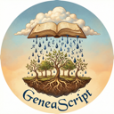

Free Google Docs™ add-on for transcribing metric book images (birth, marriage, death registers) using Gemini™ (Google™ AI). For genealogists and archivists working with 19th/20th-century vital records from Western Ukraine / Galicia.